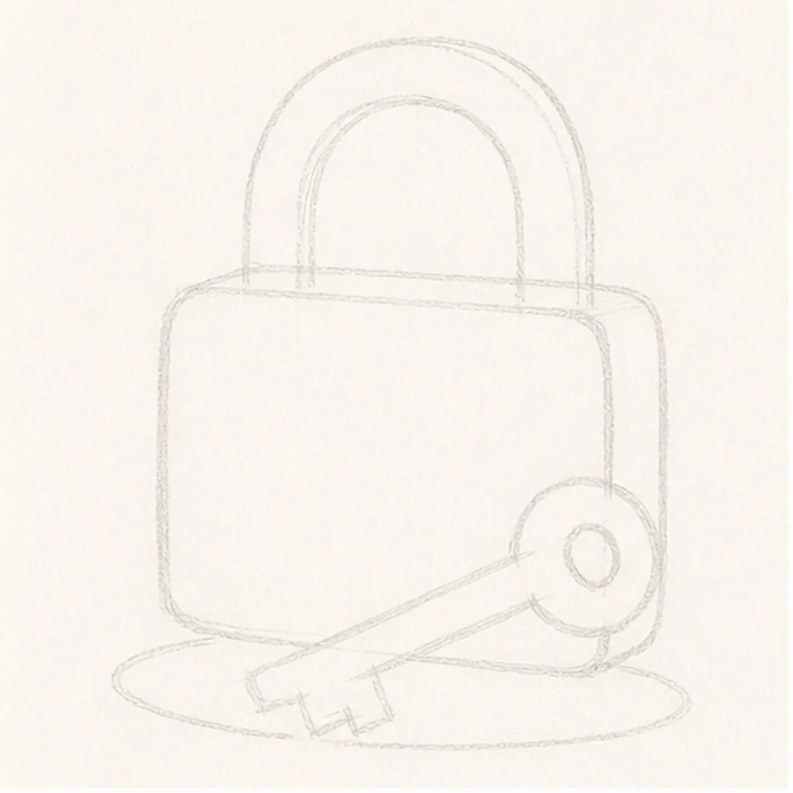
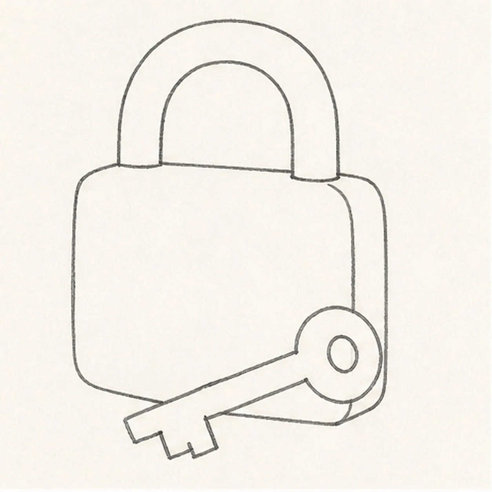
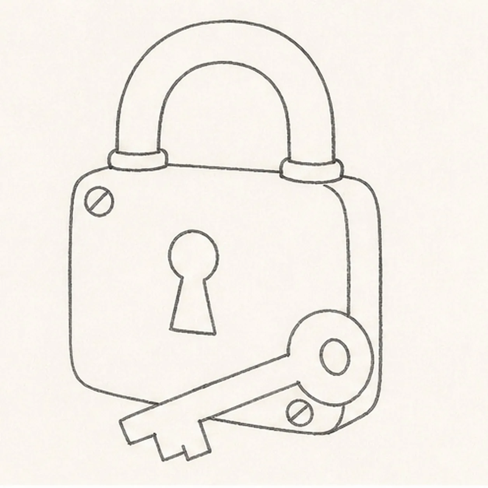
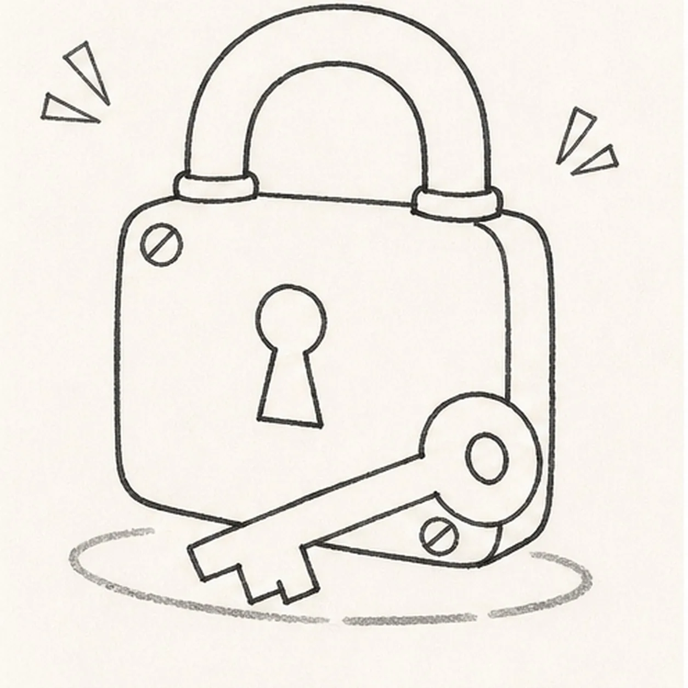

Felt-tip marker mode
Let's draw a padlock and key
Treat this as one playful practice round: sketch the idea loosely, simplify the shapes, then commit with confident marker outlines and bright fills.
-
01

Block the lock and key
Draw a pale rounded three-quarter lock body and thick arched shackle route, then reserve one diagonal key footprint across the lower body and add a shallow shadow guide.
Marker tip: Ghost the shackle arch twice, then pull its outer and inner curves with the page turned. Keep the key footprint blank so you do not ink body detail that the key will permanently cover.
-
02

Shape the secure silhouette
Wrap the guides with the rounded body, narrow side plane, inner and outer shackle edges, and one separate key with a round bow, center hole, shaft, and simple two-step teeth.
Marker tip: Compare the empty space inside the shackle with the key bow hole; both should read clearly at a glance. Break the hidden lower-body contour behind the key instead of drawing through it.
-
03

Add the lock hardware
Draw one centered keyhole, exactly two visible corner screws, one side band, and two shackle joint collars on the established lock.
Marker tip: Place the keyhole on the front plane, not the page center, then rotate the page for the screw slots. Two clear screws are enough to sell the chunky hardware.
-
04

Set the comic glints and shadow
Add exactly two paired-ray angular glint groups around the lock and one broken oval shadow beneath the existing padlock and key, then clarify the key overlap.
Marker tip: Aim the glint rays away from the lock and keep their two groups asymmetrical. Draw the shadow around the key contact points rather than coloring one perfect digital oval.
-
05
Ink and color the hardware
Thicken every established contour and fill the lock body deep teal, shackle and key mustard, side band brick red, and shadow charcoal while leaving visible paper streaks.
Marker tip: Let the black outline dry, then pull marker strokes with each form. Work the teal body in broad vertical passes and turn the page for the curved shackle and key bow.
-
06
![Handmade marker drawing of one face-free chunky three-quarter padlock with a deep-teal rounded body, narrow brick-red side plane, thick mustard arched shackle with two joint collars, one centered black keyhole, exactly two visible mustard corner screws, one separate mustard key crossing diagonally in front with a round bow, teal center hole, straight shaft and two-step teeth, two paired-ray comic glint groups, thick imperfect black outlines, visible marker streaks, paper highlight gaps, and one broken charcoal oval shadow; no face, text, sticker outline, or badge frame](../assets/cartoon-padlock-and-key-finished-v1.webp)
Click the finish into place
Strengthen the established outlines, lock-and-key overlap, keyhole, two screws, side band, shackle joints, two paired-ray glint groups, limited marker fills, paper highlights, and oval shadow.
Marker tip: Count one lock, one key, two screws, and two glint groups, then stop while the marker texture still shows. Your palette and key teeth can change, but a face, logo, or extra key would make a different lesson.


![Handmade face-free felt-tip marker drawing of one open oyster in a three-quarter view with exactly two hinged shell halves, one raised seafoam fan shell, one cupped seafoam lower shell, one dark navy hinge, exactly one large pearl-gray pearl seated in the center, one coral scalloped inner lip, one muted-gray lower shell bed, broad radiating ribs, one thin white crescent highlight on the pearl, one thin white highlight along the upper rim, thick imperfect black outlines, visible marker streaks, and one broken deep-navy ground shadow](../assets/cartoon-oyster-with-pearl-finished-v1.webp)